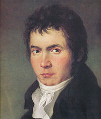

Ο Λούντβιχ βαν Μπετόβεν (Ludwig van Beethoven, Βόννη, 16 Δεκεμβρίου 1770 — Βιέννη, 26 Μαρτίου 1827) ήταν Γερμανός μουσικός και συνθέτης.
Αποτέλεσε μία από τις κεντρικότερες μορφές της κλασικής μουσικής και συγκαταλέγεται σήμερα ανάμεσα στους ευρύτερα αποδεκτούς συνθέτες όλων των
μουσικών περιόδων και τους πλέον γνωστούς όλων των εποχών. Ο Μπετόβεν αν και ανήκει περισσότερο στην κλασική περίοδο, συνδέθηκε με το κίνημα του
ρομαντισμού που ακολούθησε και τα τελευταία του έργα διακρίνονται από έντονα ρομαντικά στοιχεία. Οι συμφωνίες και τα κοντσέρτα για πιάνο που συνέθεσε
αποτελούν τα πιο δημοφιλή έργα του. Από πολλούς αναγνωρίζεται ως μια από τις μουσικές ιδιοφυίες, παράδειγμα και μέτρο σύγκρισης για όλους τους μεταγενέστερους συνθέτες.

Ο Μπετόβεν γεννήθηκε στη Βόννη το 1770. Η ακριβής ημερομηνία γέννησης του δεν είναι γνωστή, βαφτίστηκε όμως στις 17 Δεκεμβρίου. Καταγόταν από μουσική οικογένεια,
αν και κανένας από τους προγόνους του δεν διακρίθηκε στη σύνθεση. Ο παππούς του ήταν φλαμανδικής καταγωγής και διευθυντής χορωδίας στην Αυλή του Πρίγκηπα Εκλέκτορα
της Κολωνίας στη Βόννη. Ο πατέρας του, Johann van Beethoven, εργάστηκε ως επαγγελματίας τενόρος στην ίδια χορωδία ενώ παρέδιδε και μαθήματα πιάνου και τραγουδιού.
Παράλληλα αποτέλεσε τον πρώτο δάσκαλο μουσικής του Λούντβιχ, ωστόσο η σχέση τους ήταν μάλλον κακή, καθώς ο πατέρας του τον καταπίεζε διαρκώς και προσπαθούσε να τον
εκμεταλλευτεί παρουσιάζοντας τον ως παιδί θαύμα, όπως ήταν ο Μότσαρτ. Αργότερα, ο Κρίστιαν Νέεφε (Christian Neefe) ανέλαβε το έργο της μουσικής του εκπαίδευσης.
Σε ηλικία 12 ετών δημοσιεύτηκε η πρώτη του σύνθεση και ο Νέεφε δήλωσε πως επρόκειτο για τον νέο Μότσαρτ. Ο Μπετόβεν συνέχισε να συνθέτει έργα ενώ συγχρόνως άρχισε να
εργάζεται ως οργανίστας στην Αυλή. Το 1787 μια ξαφνική αρρώστια της μητέρας του, στερεί τη δυνατότητα από τον νεαρό Μπετόβεν να μεταβεί στη Βιέννη προκειμένου να κάνει
μαθήματα με τον Μότσαρτ. Λίγο αργότερα όμως, το 1792, ο Γιόζεφ Χάυντν, κανόνισε να πάει τελικά στη Βιέννη για να αναλάβει τη διδασκαλία του. Η εκπαίδευσή του στο πλευρό
του Χάυντν διήρκεσε συνολικά δύο χρόνια. Επιπλέον σπούδασε αντίστιξη για ένα χρόνο με τον Γιόχαν Γκέοργκ Αλμπρεχτσμπέργκερ (Johann Georg Allbrehtsberger) και φωνητική
σύνθεση με τον Αντόνιο Σαλιέρι (Antonio Salieri). Σταδιακά, άρχισε να αναγνωρίζεται η αξία του, αρχικά ως πιανίστας αλλά αργότερα και ως συνθέτης. Σε αντίθεση με την
πλειοψηφία των συνθετών της εποχής, ο Μπετόβεν δεν ανήκε στην Αυλή ούτε εργάστηκε για την εκκλησία, αλλά διατήρησε την ανεξαρτησία του ως συνθέτης. Κατόρθωνε να συντηρείται
είτε με έσοδα από τις δημόσιες συναυλίες του, είτε παράγοντας και έργα κατά παραγγελία. Την πρώτη δημιουργική του περίοδο κατάφερε να καθιερωθεί στη Βιέννη χάρη στην σημαντική
υποστήριξη του αριστοκρατικού κύκλου της Αυστρίας, της Βοημίας και της Ουγγαρίας.
Ένα από τα σημαντικότερα και το πιο τραγικό γεγονός της ζωής του Μπετόβεν αποτέλεσε η κώφωση του. Άρχισε να χάνει την ακοή του σταδιακά από την ηλικία των 26 ετών, το 1796
(κατά άλλους αρχίζει λίγα χρόνια αργότερα) και, περίπου το 1820, θεωρείται πως ήταν ολοκληρωτικά κωφός. Το γεγονός αυτό προκαλούσε μεγάλη θλίψη στον Μπετόβεν, η οποία αποτυπώνεται
και σε γράμμα του προς τους αδελφούς του, το 1802, με την παράκληση να διαβαστεί μετά το θάνατό του, γνωστό και ως Διαθήκη του Heiligenstadt. Παρά την απώλεια της ακοής του, έγραψε
μουσική μέχρι το τέλος της ζωής του. Η υγεία του Μπετόβεν ήταν γενικά κακή και το 1826 επιδεινώθηκε δραστικά, γεγονός που οδήγησε και στο θάνατο του τον επόμενο χρόνο.
Στην κηδεία του Μπετόβεν που έγινε στις 29 Μαρτίου ο Φραντς Σούμπερτ ήταν ένας από τους 36 λαμπαδηφόρους.
Back to top